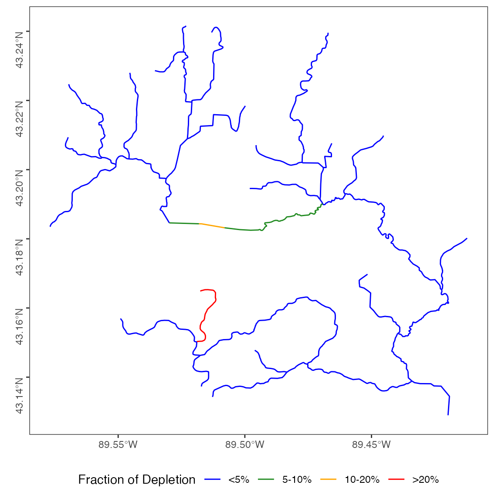

stream-depletion-ADF.Rmd
library(isw)
#> Loading required package: expint
#> Loading required package: streamDepletr
#> Loading required package: units
#> udunits database from /Library/Frameworks/R.framework/Versions/4.4-arm64/Resources/library/units/share/udunits/udunits2.xml
#> Loading required package: class
library(streamDepletr)
library(ggplot2)The streamDepletR package models stream depletion using
the Glover model.
times <- seq(1, 100) # time [days]
K <- 1e-5 * 86400 # hydraulic conductivity [m/d]
b <- 50 # aquifer thickness [m]
trans <- b * K # transmissivity [m2/d]
d <- 250 # well to stream distance [m]
Sy <- 0.1 # specific yield [-]
df_depletion <-
data.frame(
times = times,
Qf_glover = glover(t = times, d = d, S = Sy, Tr = trans)
)
df_depletion |>
tidyr::pivot_longer(-times, values_to = "Qf", names_to = "model") |>
ggplot2::ggplot(aes(x = times, y = Qf, color = model)) +
geom_line() +
scale_y_continuous(limits = c(0, 1))
Qw <- 500 # pumping rate, [m3/d]
df_depletion$Qs_glover <- df_depletion$Qf_glover * Qw # streamflow depletion, [m3/d]
# plot results
df_depletion |>
dplyr::select(c("times", "Qs_glover")) |>
tidyr::pivot_longer(-times, values_to = "Qs", names_to = "model") |>
ggplot2::ggplot(aes(x = times, y = Qs, color = model)) +
geom_line()
# define pumping schedule
t_starts <- c(10, 200, 400) # days that well turns on
t_stops <- c(60, 350, 700) # days that well turns off
# calculate depletion through time
df_intermittent <-
data.frame(
times = seq(1, 730),
Qs_intermittent =
intermittent_pumping(
t = seq(1, 730), starts = t_starts, stops = t_stops,
rates = rep(Qw, length(t_starts)),
method = "glover", d = d, S = Sy, Tr = trans
)
)
# plot - times when the well is turned on are shaded red
ggplot2::ggplot(
df_intermittent,
aes(x = times, y = Qs_intermittent)
) +
annotate("rect",
xmin = t_starts[1], xmax = t_stops[1],
ymin = -Inf, ymax = Inf, fill = "red", alpha = 0.5
) +
annotate("rect",
xmin = t_starts[2], xmax = t_stops[2],
ymin = -Inf, ymax = Inf, fill = "red", alpha = 0.5
) +
annotate("rect",
xmin = t_starts[3], xmax = t_stops[3],
ymin = -Inf, ymax = Inf, fill = "red", alpha = 0.5
) +
geom_line()
pump_rates <- c(100, 1000, 100) # [m3/d] - must be same length as t_starts and t_stops
df_intermittent$Qs_variableRate <-
intermittent_pumping(
t = seq(1, 730), starts = t_starts, stops = t_stops,
rates = pump_rates, method = "glover", d = d, S = Sy, Tr = trans
)
# plot - times when the well is turned on are shaded red
df_intermittent |>
tidyr::pivot_longer(-times, values_to = "Qs", names_to = "pumpSchedule") |>
ggplot2::ggplot(aes(x = times, y = Qs, linetype = pumpSchedule)) +
annotate("rect",
xmin = t_starts[1], xmax = t_stops[1],
ymin = -Inf, ymax = Inf, fill = "red", alpha = 0.5
) +
annotate("rect",
xmin = t_starts[2], xmax = t_stops[2],
ymin = -Inf, ymax = Inf, fill = "red", alpha = 0.5
) +
annotate("rect",
xmin = t_starts[3], xmax = t_stops[3],
ymin = -Inf, ymax = Inf, fill = "red", alpha = 0.5
) +
geom_line()
# well properties
Qw <- 1000 # well pumping rate [m3/d]
wel_lon <- 295500 # easting of well [m]
wel_lat <- 4783200 # northing of well [m]
date_pump_start <- as.Date("2014-03-01") # pumping start date
date_pump_stop <- as.Date("2015-08-01") # pumping stop date
# aquifer properties
K <- 1e-5 * 86400 # hydraulic conductivity [m/d]
b <- 250 # aquifer thickness [m]
trans <- b * K # transmissivity [m2/d]
Sy <- 0.05 # specific yield [-]
rdll <- prep_reach_dist(
wel_lon = wel_lon, wel_lat = wel_lat,
stream_sf = stream_lines, reach_id = "reach", stream_pt_spacing = 5
)
head(rdll)
#> reach dist lat lon
#> 1 07090002008187 5253.566 4788325 296653.6
#> 2 07090002008187 5248.909 4788321 296650.8
#> 3 07090002008187 5244.252 4788317 296648.0
#> 4 07090002008187 5239.596 4788313 296645.2
#> 5 07090002008187 5234.941 4788309 296642.4
#> 6 07090002008187 5230.286 4788305 296639.6
# figure out which stream is closest
closest_reach <- rdll[which.min(rdll$dist), "reach"]
closest_dist <- rdll[which.min(rdll$dist), "dist"]
closest_stream <- stream_lines$stream[stream_lines$reach == closest_reach]
closest_discharge <- subset(discharge_df, stream == closest_stream)
# since time inputs for the streamflow depletion models are numeric (not dates),
# we need to figure out the start and stop date in days since the start of our period of interest
t_pump_start <- as.numeric(date_pump_start - min(closest_discharge$date))
t_pump_stop <- as.numeric(date_pump_stop - min(closest_discharge$date))
times <- as.numeric(closest_discharge$date - min(closest_discharge$date))
# calculate depletion - since the pumping starts and stops during our period of interest,
# we will use the intermittent_pumping function even though it is only one pumping cycle
Qs <- intermittent_pumping(
t = times, starts = t_pump_start, stops = t_pump_stop, rates = Qw,
method = "glover", d = closest_dist, S = Sy, Tr = trans
)
# plot capture fraction through time - the shaded interval indicates when pumping is occurring
data.frame(date = closest_discharge$date, Qs = Qs) |>
ggplot2::ggplot(aes(x = date, y = Qs)) +
annotate("rect",
xmin = date_pump_start, xmax = date_pump_stop,
ymin = -Inf, ymax = Inf, fill = "red", alpha = 0.5
) +
geom_line() +
scale_y_continuous(name = "Qs, Streamflow Depletion [m3/d]")
# calculate streamflow
closest_discharge$Q_pumped <- closest_discharge$Q_m3d - Qs
closest_discharge |>
tidyr::pivot_longer(cols = c("Q_m3d", "Q_pumped"), names_to = "variable", values_to = "discharge_m3d") |>
ggplot2::ggplot(aes(x = date, y = discharge_m3d, color = variable)) +
annotate("rect",
xmin = date_pump_start, xmax = date_pump_stop,
ymin = -Inf, ymax = Inf, fill = "red", alpha = 0.5
) +
geom_line() +
coord_trans(y = scales::log1p_trans())
max_dist <- depletion_max_distance(
Qf_thres = 0.01, method = "glover", d_max = 10000,
t = (t_pump_stop - t_pump_start), S = Sy, Tr = trans
)
max_dist
#> [1] 5400
fi <- apportion_inverse(reach_dist = rdll, w = 2, max_dist = max_dist)
head(fi)
#> reach frac_depletion
#> 1 07090002007664 0.008159978
#> 2 07090002007665 0.009153897
#> 3 07090002007666 0.010842769
#> 4 07090002007667 0.031301604
#> 5 07090002007668 0.026456416
#> 6 07090002007669 0.269197956
# merge fi with stream network shapefile
stream_lines_fi <- dplyr::left_join(stream_lines, fi, by = "reach")
# any NA values means they are outside the max_dist and should be set to 0
stream_lines_fi$frac_depletion[is.na(stream_lines_fi$frac_depletion)] <- 0
# cut frac_depletion into groups
stream_lines_fi$frac_depletion_intervals <-
cut(stream_lines_fi$frac_depletion,
breaks = c(0, 0.05, 0.1, 0.2, 1),
labels = c("<5%", "5-10%", "10-20%", ">20%"),
include.lowest = T
)
# plot
ggplot2::ggplot(stream_lines_fi, aes(color = frac_depletion_intervals)) +
geom_sf() +
scale_color_manual(
name = "Fraction of Depletion", drop = F,
values = c("blue", "forestgreen", "orange", "red")
) +
theme_bw() +
theme(
axis.text.y = element_text(angle = 90),
panel.grid = element_blank(),
legend.position = "bottom"
)